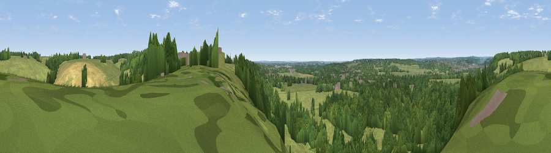

Viewpoint near Lower Shiplake
#38437 in England · top 29% of its area beats it · near Lower ShiplakeWhere it is
The exact computed spot (SU 78475 80575). Click the marker for map links.
The view, rendered

A 360° render of this exact spot computed from the terrain model, tree cover and land cover — summer colours, afternoon light, calibrated against photographs of famous viewpoints. Real trees, hedges and buildings will differ in detail.
The panorama
Grey silhouette: terrain skyline in each direction (720 bearings, Earth curvature and refraction included). Dashed green: skyline with trees (+15 m) and buildings (+8 m) as obstacles. Blue strip: how far the ground is visible on each bearing.
Where the view opens
Wedge length = distance to the farthest visible ground on that bearing (vegetation-aware). Rings at 10, 25 and 50 km.
What fills the view
44% grassland · 43% woodland · 10% cropland · 2% built-up · 1% water
Angular shares of the visible panorama (visual magnitude), not map area. Landscape diversity 0.47 (0–1 Shannon).
Key numbers
More beautiful places nearby
The staircase of upgrades: each row has a higher view potential than everything closer. Driving times are estimates from straight-line distance, calibrated against real road routing — check an actual route before setting out.
| Place | Direction | Drive | Score |
|---|---|---|---|
| Viewpoint near Crazies Hill | E · 2 km | ~6 min | 28.8 |
| Viewpoint near Knowl Hill | E · 4 km | ~9 min | 30.1 |
| Viewpoint near Hambleden | N · 6 km | ~12 min | 32.4 |
| Viewpoint near Hambleden | N · 8 km | ~15 min | 34.6 |
| Viewpoint near Fawley | NNW · 8 km | ~16 min | 39.3 |
| Viewpoint near Fawley | NNW · 9 km | ~18 min | 48.8 |
| Viewpoint near Nuffield | NW · 15 km | ~27 min | 62.3 |
| Viewpoint near Cookley Green | NW · 15 km | ~27 min | 68.5 |
51.51865, -0.87039 · source: screening · position refined by local search. Computed location — check access rights before visiting.